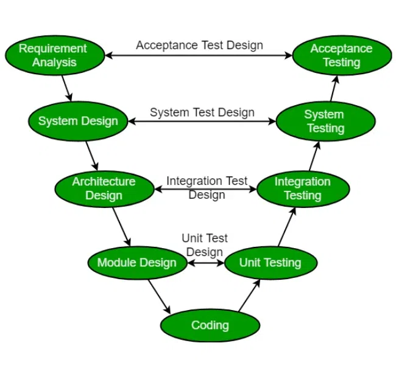
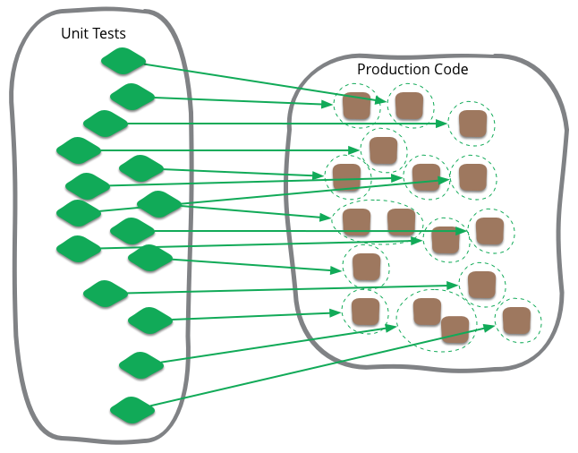
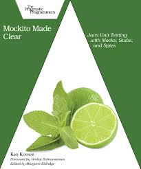
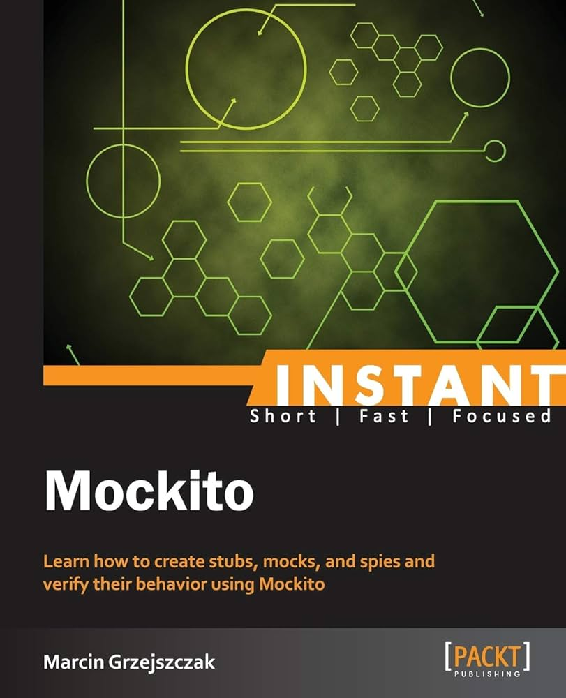
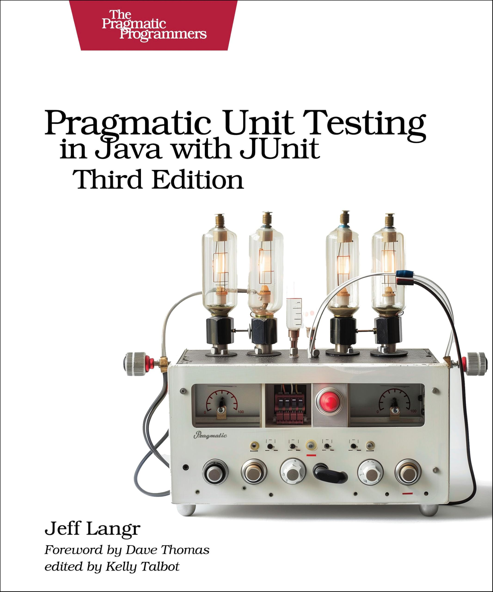
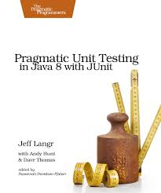
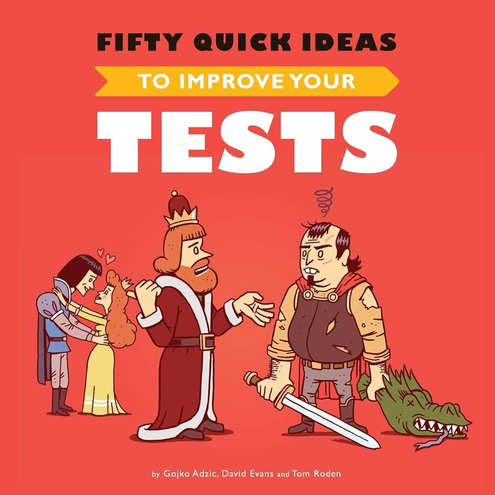
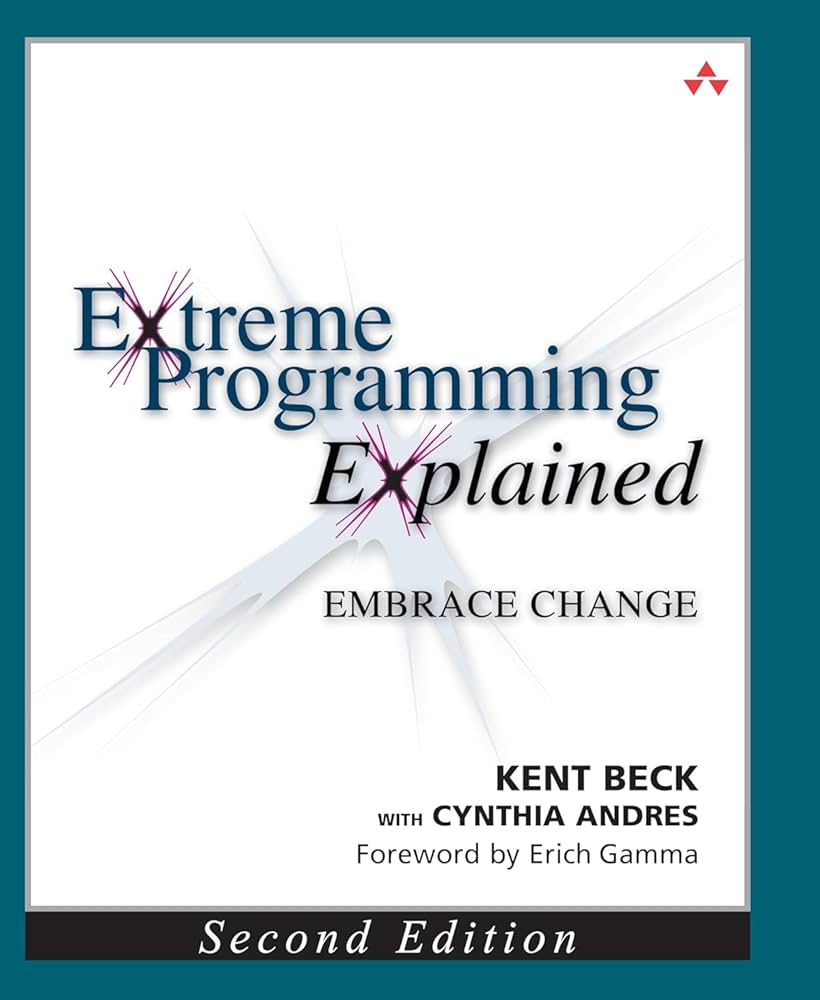
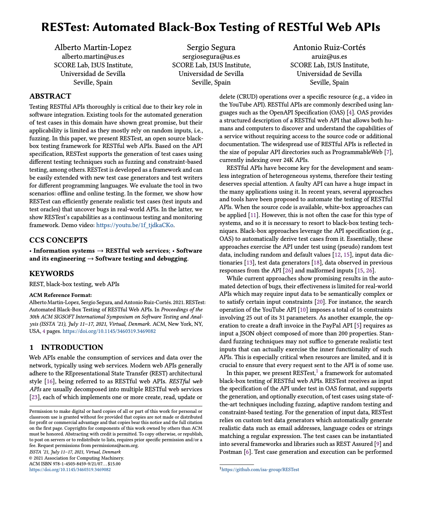

Be or not to be
in a pyramid of testing
The "To be or not to be" soliloquy appears in Act 3, Scene 1 of Shakespeare’s Hamlet.
In this scene, often called the "nunnery scene," Prince Hamlet thinks about life, death, and suicide.
Specifically, he wonders whether it might be preferable to commit suicide to end one's suffering and to leave behind the pain and agony associated with living.
How to live with the lack of testing?
This is the question...
"Quality is never an accident; it is always the result of intelligent effort."
- John Ruskin
“Program testing can be used to show the presence of bugs, but never to show their absence!”
- Edsger W. Dijkstra
“Discovering the unexpected is more important than confirming the known.”
- George E. P. Box
"Quality is not an act, it is a habit."
- Aristotle
“If you're not failing, you're not trying hard enough.”
- Martin Fowler
Agenda
- Testing in the SLDC
- Shapes of pyramids of testing
- Types of software testing
- Testing and Generative AI
- References
- Q&A
Testing in the SLDC
 Source: https://datarob.com/essentials-software-development-life-cycle/
Source: https://datarob.com/essentials-software-development-life-cycle/
Testing in the SLDC
Questions for the audience:
What is the percentage of your time invested in testing in a Sprint?
Testing in the SLDC
Approximately 40-50% of the total software development project lifecycle cost involves testing, which is in line with industry software cost models.
Tim Crumbley (NASA)Testing in the SLDC
V-Model
 Source: https://www.geeksforgeeks.org/software-engineering-sdlc-v-model/Testing in the SLDC
V-Model
Every profile have to test!
- Business people: Test the product
- Architects: Test the architecture & system design
- Dev teams: Test the code
Testing in the SLDC
What is Testing value?
The value of testing really boils down to:
- Bugs
- Runtime issues
- Quality/Risk Assessment
- Requirement validation
Shapes of pyramids of testing
Classical testing pyramid:
Source: https://engineering.atspotify.com/2018/01/testing-of-microservices/Shapes of pyramids of testing
What kind of software do you develop?
- Microservices
- Monolithic
- Mobile
- Web
- Libraries
Shapes of pyramids of testing
If you think in a Microservice architecture...
Shapes of pyramids of testing
Spotify testing model:
Source: https://engineering.atspotify.com/2018/01/testing-of-microservices/Shapes of pyramids of testing
From:
Source: https://engineering.atspotify.com/2018/01/testing-of-microservices/Shapes of pyramids of testing
To:
Source: https://engineering.atspotify.com/2018/01/testing-of-microservices/Shapes of pyramids of testing
- Unit Testing: Test 1 thing, alone
- Integration Testing: Test a few things, together
- End-to-end (E2E) Testing: Test that everything works together (run the app)
Types of software testing
Unit testing
 Source: https://martinfowler.com/bliki/UnitTest.htmlUnit testing
Unit testing is a type of software testing where individual units or components of a software are tested. The purpose of unit testing is to validate that each unit of the software performs as expected.
Concepts
- Mocks: Mocking is the practice of creating simulated versions of the objects in the code, and then using these mock objects to mimic the behavior of the real objects or services so that we can test parts of the code in isolation.
- Stubs: A stub is a test double that returns a configured response every time when an expected interaction happens between the system under test and a stub.
Integration testing
Source: https://katalon.com/resources-center/blog/integration-testingIntegration testing
Integration testing is a type of software testing where the software is tested as a whole, to ensure that the different parts of the software work together as expected.
Integration testing
 Source: https://www.structurizr.com/share/1/diagrams#Components
Source: https://www.structurizr.com/share/1/diagrams#Components
Integration testing
Integration tests test the plumbing and choreography of the components.
- Uncle Bob Martin
Integration testing
Questions for the audience:
When is better not not use Mocks and it is better to create an Integration test?
Integration testing
| Service | Solution |
| HTTP | WireMock |
| Database | TestContainers |
| Broker | TestContainers |

Testing and Generative AI
 Source: https://martinfowler.com/articles/engineering-practices-llm.html
Source: https://martinfowler.com/articles/engineering-practices-llm.html
Testing and Generative AI
Source: https://www.gitclear.com/ai_assistant_code_quality_2025_researchTesting and Generative AI
References
Mockito made clear
 Source: https://pragprog.com/titles/mockito/mockito-made-clear/Mockito Cookbook
Source: https://www.amazon.com/-/es/Marcin-Grzejszczak-ebook/dp/B00LA414IMInstant Mockito
 Source: https://www.amazon.com/Instant-Mockito-Marcin-Grzejszczak/dp/1782167978Unit Testing in Java with JUnit
 Source: https://pragprog.com/titles/utj3/pragmatic-unit-testing-in-java-with-junit-third-edition/Unit Testing
 Source: https://pragprog.com/titles/utj2/pragmatic-unit-testing-in-java-8-with-junit/Fifty quick ideas to improve your tests
 Source: https://fiftyquickideas.com/fifty-quick-ideas-to-improve-your-tests/Test Driven Development: By Example
Source: https://www.amazon.com/Test-Driven-Development-Kent-Beck/dp/0321146530Extreme Programming Explained
Source: https://kentbeck.com/
RESTest: Automated Black-Box Testing of RESTful Web APIs
Source: RESTest: Automated Black-Box Testing of RESTful Web APIs
üôè üôè üôè
Thanks